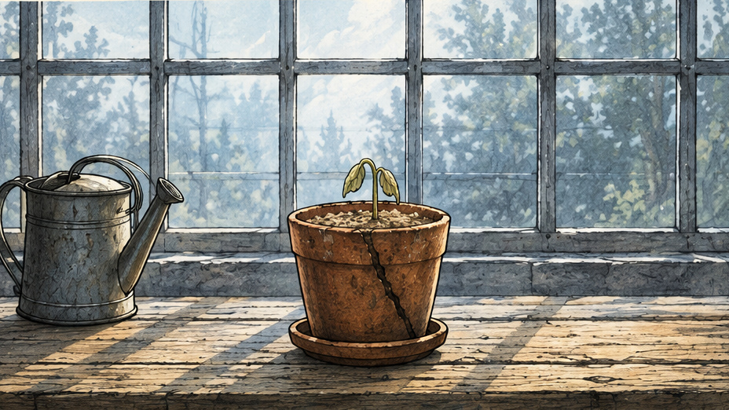
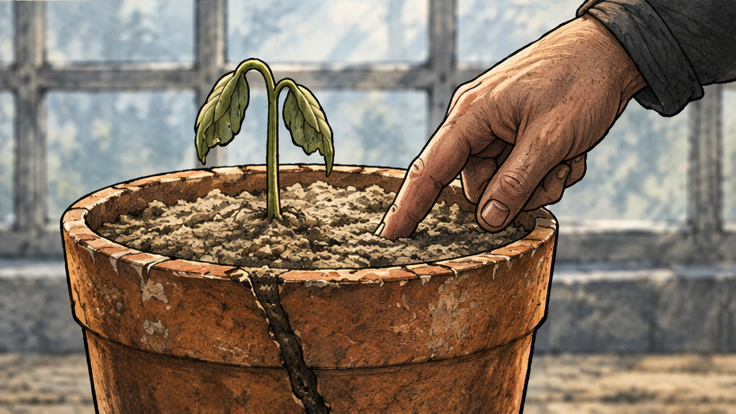
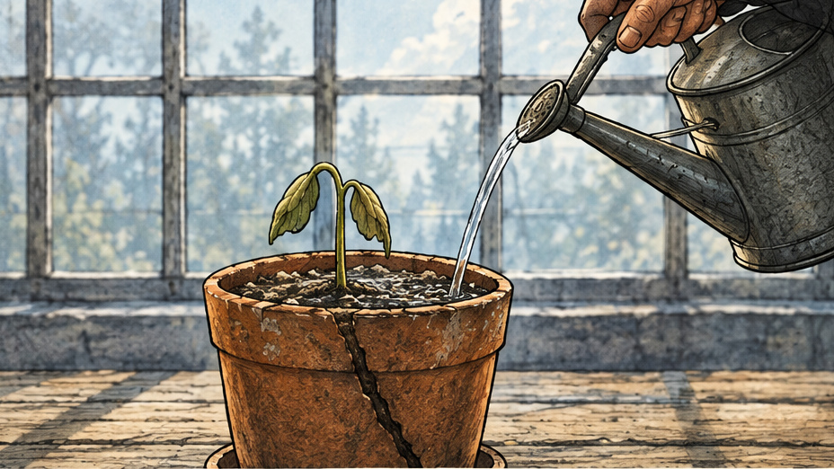
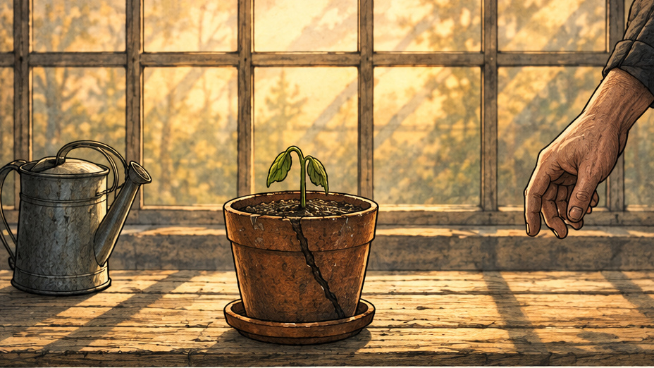
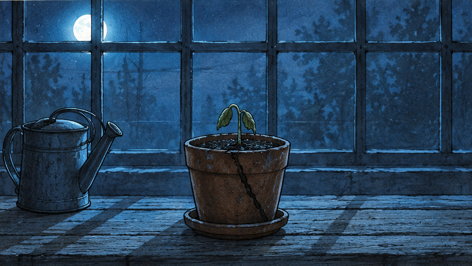
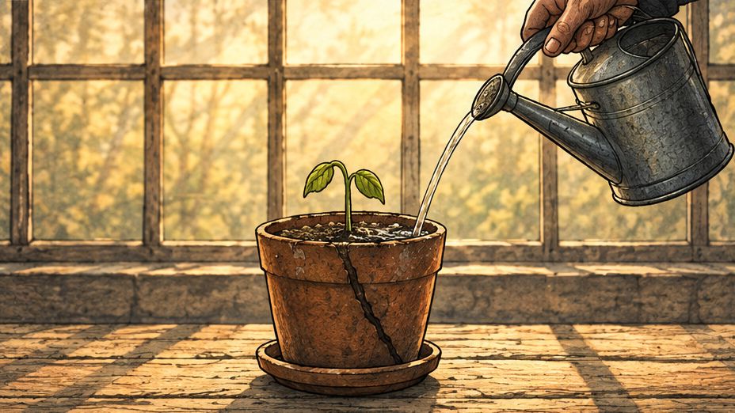
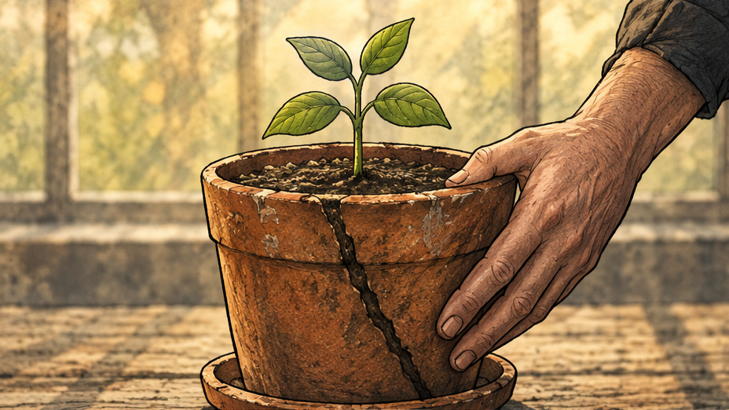
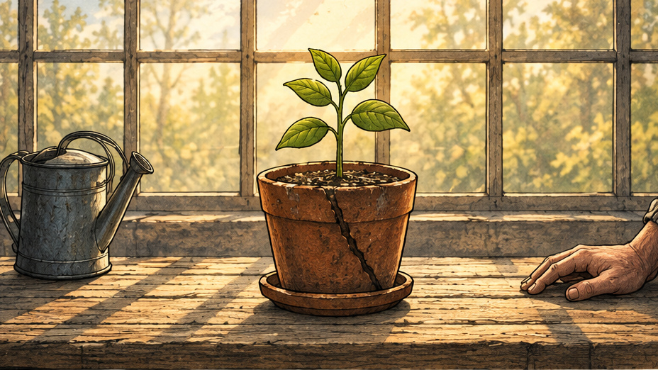

01 / Dry soil
00:00 to 00:04 / 4s
Action A small seedling sits in dry soil.
Camera Wide, locked
Time evidence Dry soil, small plant, warm daylight.
Intent Establish the pot and its starting condition.
Original generated teaching example / 30-second timing plan
A seedling, a repeated act, a visible change.

Action A small seedling sits in dry soil.
Camera Wide, locked
Time evidence Dry soil, small plant, warm daylight.
Intent Establish the pot and its starting condition.

Action A fingertip tests the soil.
Camera Close-up, locked
Time evidence The hand touches the soil before the water arrives.
Intent Make the decision to water readable.

Action Water reaches the soil.
Camera Medium close-up, locked
Time evidence Water and darkening soil share the frame.
Intent Show contact and its immediate result.

Action The plant remains small in evening light.
Camera Medium, locked
Time evidence The light changes before the plant changes.
Intent Give waiting its own beat.

Action The greenhouse falls into blue night.
Camera Medium, locked
Time evidence Cool darkness follows the evening frame.
Intent Make elapsed time visible without a title card.

Action The caretaker returns to water again.
Camera Medium, locked
Time evidence A repeated action arrives after the night shot.
Intent Suggest a continuing routine.

Action Larger leaves reveal a change.
Camera Close-up, locked
Time evidence The plant is fuller than in the first frame.
Intent Let the audience discover the result.

Action The fuller plant occupies the familiar workbench.
Camera Wide, locked
Time evidence The pot and bench anchor the before-and-after comparison.
Intent Echo the opening setup so the change can be compared.
Holds: 4 + 3 + 4 + 3 + 4 + 3 + 4 + 5 = 30 seconds. Hard cuts. No camera movement. Silent.
Fictional AI-generated imagery, Higgsfield GPT Image 2.5. No student work, real people or recorded footage. Time is compressed, not a botanical claim.